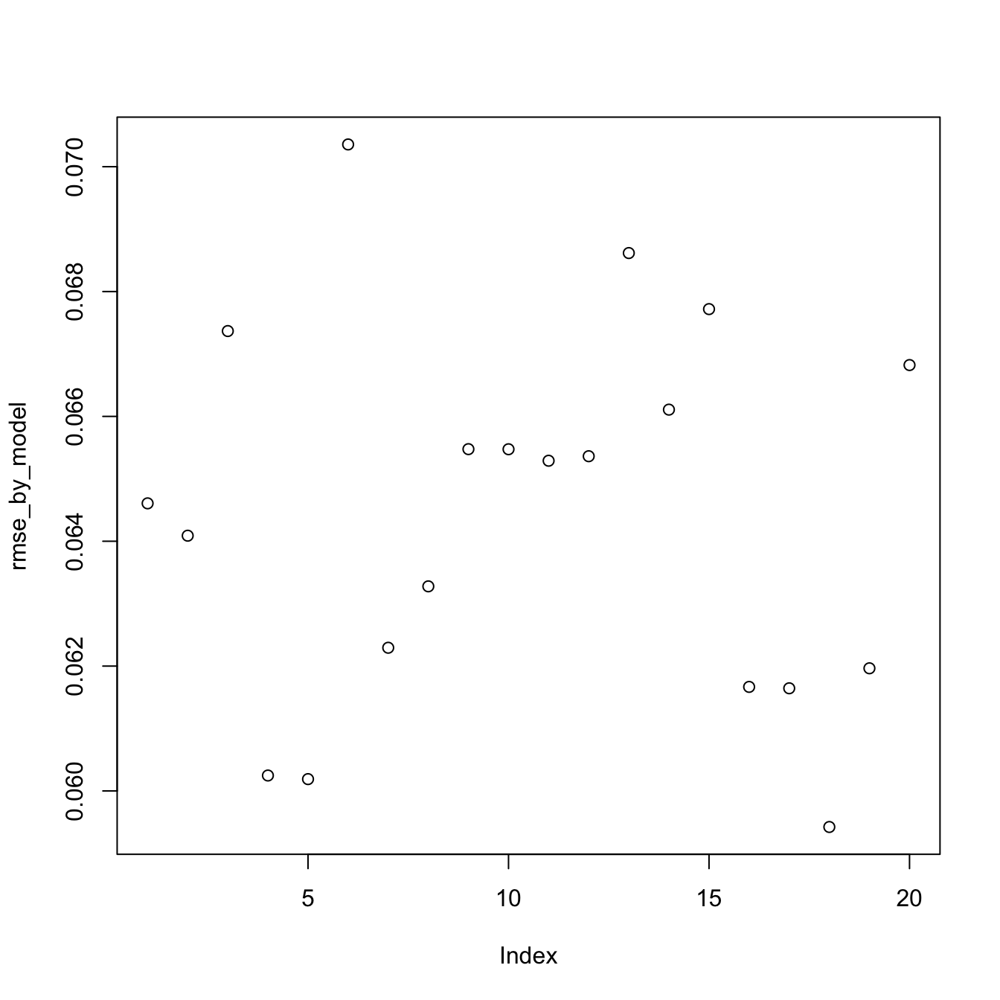
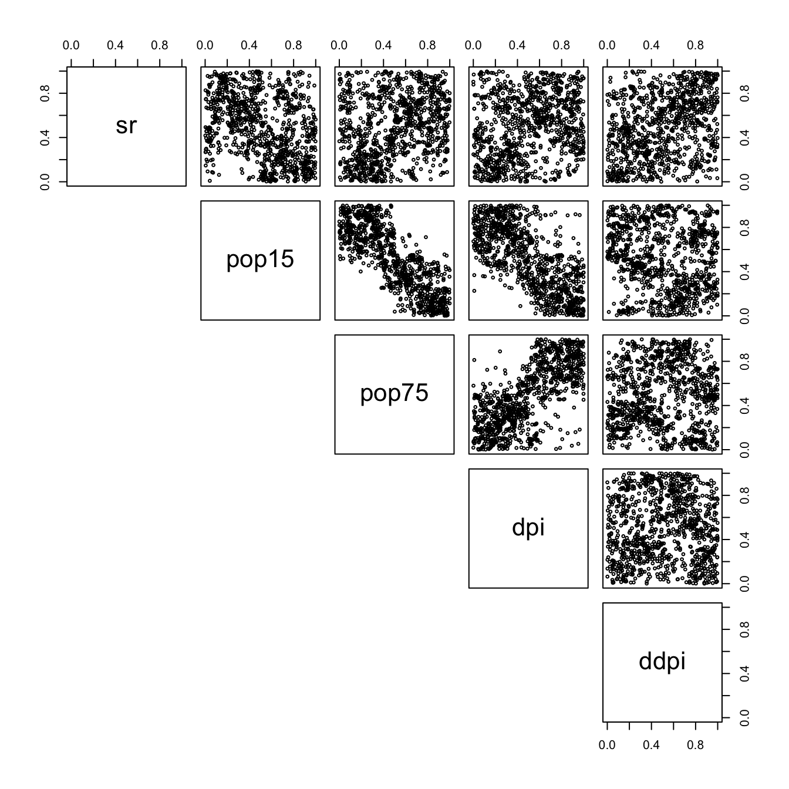

Convex mixture of m-randomized checkerboards
Oskar Laverny
2020-03-25
Source:vignettes/bootstrap_varying_m.Rmd
bootstrap_varying_m.RmdIntroduction
In this vignette, we will demonstrate how the checkerboard parameters \(m\) can be used to produce an efficient meta-model. We will construct \(m\)-randomized checkerboard copulas, and based on some fit statistics we will then combine them in a convex mixture. Our model here will use all possibles \(m_i\)’s values for checkerboard copulas and aggregate all those values by optimizing a quadratic loss under resampling condition. As usual, we will work on the LifeCycleSavings dataset :
set.seed(1)
df <- apply(LifeCycleSavings,2,rank)/(nrow(LifeCycleSavings)+1)
d = ncol(df)
n = nrow(df)
nb_replicates = 5 # number of replication of the resampling.
nb_fold = 5 # "k" value for the k-fold resampling method.
nb_cop = 20 # the number of m-randomized checkerboard copulas we will test.
pairs(df,lower.panel = NULL,cex=0.5)
Fitting function
The following functions proposes a fit :
make_k_fold_samples <- function(data,k = nb_fold,n_repeat = 1){
sapply(1:n_repeat,function(n){
# shuffle data :
data <- data[sample(nrow(data)),]
# create k folds :
folds <- cut(seq(1,nrow(data)),breaks=k,labels=FALSE)
sapply(1:k,function(i){
test_index <- which(folds==i,arr.ind=TRUE)
test <-
train <-
return(list(train = data[-test_index,],
test = data[test_index,]))
},simplify=FALSE)
})
}
build_random_m <- function(how_much=1,dim = d,nrow_data){
t(sapply(1:how_much,function(i){
m_pos = (2:nrow_data)[nrow_data%%(2:nrow_data)==0]
sample(m_pos,d,replace=TRUE)
}))
}
build_all_checkerboard <- function(sampled_data,m){
lapply(sampled_data,function(d){
apply(m,1,function(m_){
cbCopula(x = d$train,m = m_,pseudo=TRUE)
})
})
}
samples <- make_k_fold_samples(df,k=nb_fold,n_repeat=nb_replicates)
rand_m <- build_random_m(nb_cop,d,nrow(samples[[1]]$train))
cops <- build_all_checkerboard(samples,rand_m)Let’s first calculate the empirical copula values :
pEmpCop <- function(points,data=df){
sapply(1:nrow(points),function(i){
sum(colSums(t(data) <= points[i,]) == d)
}) / nrow(data)
}Now, we also need to calculate the errors that our copulas made compared to the empirical copula (our benchmark).
# We need to calculate for each copula it's error.
error <- function(cop,i,j){
test <- samples[[i]]$test
return(sum((pCopula(test,cop) - pEmpCop(test))^2))
}
errors <- sapply(1:(nb_replicates*nb_fold),function(i){
sapply(1:nb_cop,function(j){
error(cops[[i]][[j]],i,j)
})
})
rmse_by_model <- sqrt(rowMeans(errors))
plot(rmse_by_model)
Each point on the graph correspond to the rmse of a model. We recall the values of \(m\) used by those models :
rand_m
#> [,1] [,2] [,3] [,4] [,5]
#> [1,] 10 8 40 20 40
#> [2,] 2 40 4 2 10
#> [3,] 4 40 40 5 5
#> [4,] 4 2 8 4 10
#> [5,] 10 5 4 8 5
#> [6,] 5 40 20 20 2
#> [7,] 40 8 40 10 8
#> [8,] 20 10 5 5 2
#> [9,] 2 4 10 2 5
#> [10,] 4 40 8 2 5
#> [11,] 2 40 40 20 10
#> [12,] 8 4 10 10 5
#> [13,] 4 20 8 40 2
#> [14,] 2 40 20 2 5
#> [15,] 5 10 40 4 10
#> [16,] 8 4 4 4 8
#> [17,] 2 20 2 2 10
#> [18,] 20 20 2 5 20
#> [19,] 5 5 5 2 8
#> [20,] 40 8 10 8 2convex_combination <- ConvexCombCopula(unlist(cops,recursive=FALSE),alpha = rep(1/rmse_by_model,nb_replicates*nb_fold))
simu = rCopula(1000,convex_combination)
pairs(simu,lower.panel = NULL,cex=0.5)
Which is quite good compared to the dataset we started with. This process is really fast and useful, and can of course be used for high-dimensional datasets.
The parameters nb_fold, nb_repeats, nb_cop could be further optimized. Furthermore, if some multivariate margins are known, the same thing could be done using cbkmCopula() instead of cbCopula() models.